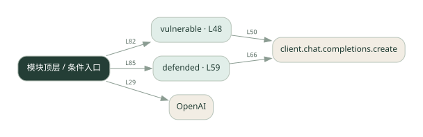

1-16 · 全课程第 16 节
提示注入实验
prompt_sec.py
源码快照 2d0ae8445622 · 静态解析 · 2026-09-10
01 / 要完成的事
比较直接拼接不可信文本与加入防护后的行为。
02 / 为什么要做
文档或用户文本可能夹带“忽略规则”等指令，干扰原任务。
03 / 当前代码状态
存在外部服务或模型依赖；执行前需按源文件配置依赖和凭据，可能联网或产生 API 费用。 本次只做静态解析，没有运行练习，也没有替你填写或修改原代码。
04 / 调用图
打开大图 ↗实线：源码中的直接调用；虚线：函数引用/注册、动态调用或按方法名推断的候选。L 是调用所在源码行号。箭头不表示执行顺序或每次必经；分支、循环、异步调度及框架内部调用需结合源码。灰色是外部/未解析目标，橙色是动态分发；省略 print、len 和常规容器操作以减少干扰。孤立函数可能尚未接入。

先从 模块入口 出发，沿箭头找到本文件函数，再查看外部调用或动态分发。右侧调用清单保留所有静态调用点，能回到原文件逐行对照。
05 / 函数定位
| 函数 / 定义行 | 职责（源码注释） | 内部调用 |
|---|---|---|
vulnerableL48 | 无防御：用户输入直接拼进 messages，可能被劫持 | client.chat.completions.create |
defendedL59 | 有防御：先检测可疑输入，再用强化的 system 指令 | client.chat.completions.create |
这样做的优点
能直观看到提示边界的重要性。
代价与局限
关键词过滤和系统提示都不是完整安全边界，绕过形式很多。
适用场景
在无副作用环境里学习和测试提示注入。
不宜直接照搬
把这段示例当作工具权限、数据隔离或授权的替代品。
动手检验理解
换一种不含原关键词的攻击表达，观察防护是否仍有效。
有未实现位置时先预测，再补齐验证。能启动不等于逻辑正确。
查看全部 14 个静态调用 / 引用点
| 调用方 | 目标 | 源码行 | 类型 |
|---|---|---|---|
| <模块入口> | OpenAI | 29 | 调用 |
| vulnerable | client.chat.completions.create | 50 | 调用 |
| defended | client.chat.completions.create | 66 | 调用 |
| <模块入口> | print | 76 | 调用 |
| <模块入口> | print | 77 | 调用 |
| <模块入口> | print | 78 | 调用 |
| <模块入口> | print | 79 | 调用 |
| <模块入口> | print | 81 | 调用 |
| <模块入口> | print | 82 | 调用 |
| <模块入口> | vulnerable | 82 | 调用 |
| <模块入口> | print | 84 | 调用 |
| <模块入口> | print | 85 | 调用 |
| <模块入口> | defended | 85 | 调用 |
| <模块入口> | print | 87 | 调用 |